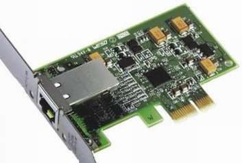
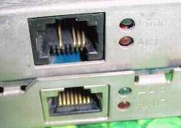
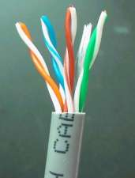
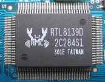

硬件基础教程
作者：TeliuTe 来源：基础教程网
网卡用于联网，连接各个计算机形成一个网络，下面我们来看一个练习；
1、网卡
1）网卡有独立和集成两种，在机箱的后面找到一个“凸”字形的插孔，就是插网线的地方，

“猫”的插孔也是“凸”字形，但方块比较大，下边缺口，网卡的要扁一些，下边是平的；

2）网卡跟网线相连，网线头是一个水晶头(RJ45 插头)，用夹线钳压制连线，
网线是一个圆线或扁线，里面有一对对的彩色线，称为双绞线；

2、网卡维护
1）常见的网卡是RTL8139型号的，系统可以自动安装驱动程序，如果是其他型号，可以在主板驱动盘的Net文件夹中安装驱动；

1）网卡插网线时，捏住水晶头的弹片手柄，塞进去再松开，拔出的时候也是捏住往外拉；
2）插孔旁边有两个指示灯，分别指示电源和数据传输，可以判断是否连通；
3）网线比较长时，可以卷起来扎好，贴墙布好，以免不小心绊着，搬移机箱时也要考虑别扯坏网线；
本节学习了的基础知识，如果你成功地完成了练习，请继续学习下一课内容；
本教程由86团学校TeliuTe制作|著作权所有
基础教程网：http://teliute.org/
美丽的校园……
转载和引用本站内容，请保留版权信息和本站链接。